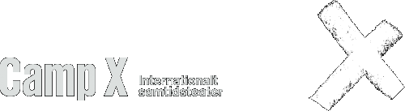
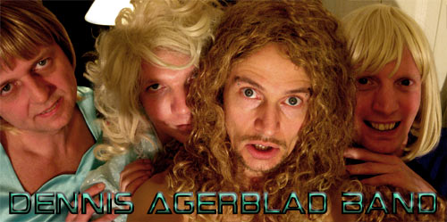

| dunst Recommends: | 4. April - 2008 |
  Dennis Agerblad Band er hovedsagligt Dennis Agerblad som får hjælp af veninderne Tove Hansen, Delores Düschess La Cour & Gina Jet med et blidt transe-kor til de frække sange fra det virkelige liv. Der bydes blandt andet på den stille klassisk lydende pædofil sang "Knud Fest og Sjov" og i den mere dansable genre er der den festlige: "bol mig i mit numsehul" Denne aften går vi total ”Camp” på Camp 22.30, når vi holder Gay M/K night. Det bliver homoer på scenen, bag DJ pulten, på dansegulvet, og hvis I heteroer ”faker den” i døren, kan det være I også får lov at slippe ind. Det bliver mere Queer end queer. Der er Queer-performance af Dennis Agerblad, som er en af hovedkræfterne i performance-gruppen DUNST. Typisk lesbisk laver shop og event mens aftenen også byder på en særlig Camp Surprise Event. Sandra Day signerer sin bog "Fra bondeknøs til piskedronning". DJs: Rosa Lux og Minimal Martin Byens sejeste HOMO DJ par, har rykket samtlige homo dansegulve i byen fra de tidlige Dunst fester i Ungdomshuset, forbi Dunkel, Vega, Tease, Wonk, diverse Modeshows til undergrunds klubber i Berlin og New York. Rosa Lux i den festlige elektro, house og tech stil, Minimal Martin som navnet siger i mere minimalistisk stil, han har i øvrigt også stået bag en del tracks på de to Dunst udgivelser. |
|
| Tilbage |